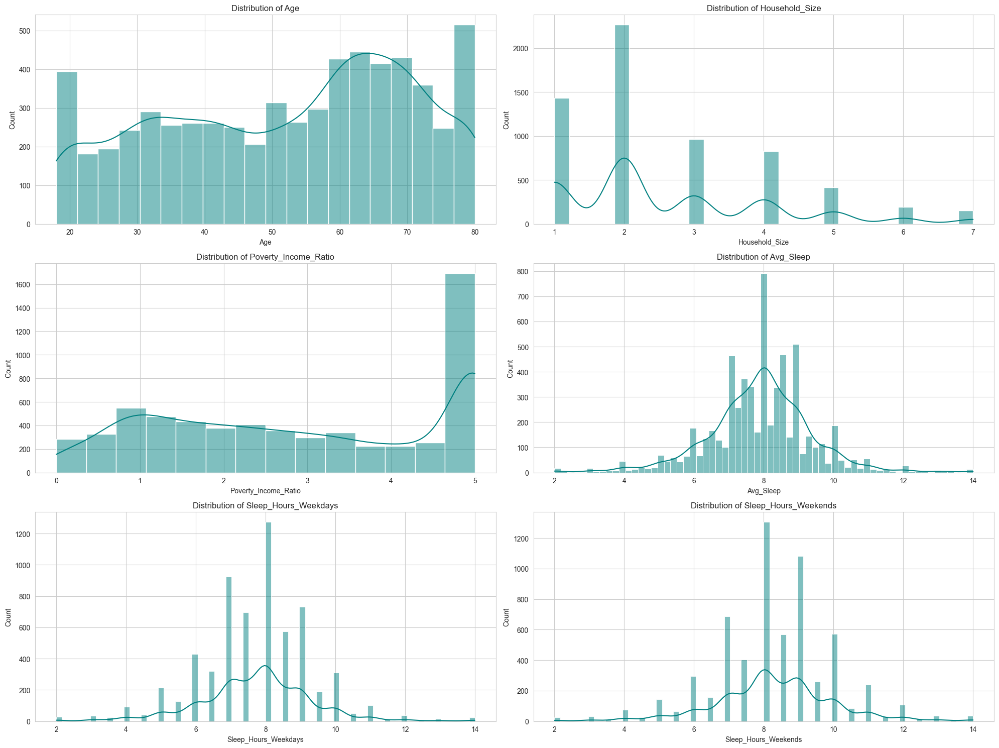
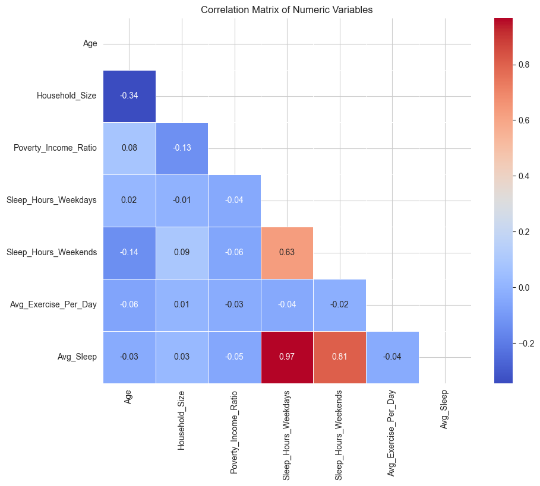

Predicting Sleep Duration
A Machine Learning Analysis of NHANES Data
By Wendy, Sophia, and Jenny
Can we accurately predict how many hours an adult sleeps based on demographics and lifestyle?
1. The Predictive Task
Goal: Predict Avg_Sleep (average hours of sleep per night) as a
continuous value.
Inputs
- Demographics: Age, Sex, Race, Education, Poverty Ratio.
- Health & Lifestyle: BMI, Physical Activity, Sedentary Time.
Evaluation Metrics
- MAE (Mean Absolute Error): Average error in hours. Interpretable.
- MSE (Mean Squared Error): Penalizes large errors. Optimization objective.
- R² (Coefficient of Determination): Variance explained. 1 is perfect, 0 is baseline.

2. Data & Exploration
Data from NHANES 2021-2023. Adults 18+.
Preprocessing
- Filtered for adults with valid sleep data.
- Imputed missing values (median for continuous).
- Encoded categorical variables (OneHot/Ordinal).
- Scaled continuous variables.
Key Insights
Correlations are weak. No single feature strongly predicts sleep.
Sedentary Time vs. Sleep

3. Modeling Approach
Models
- Baseline: Mean Predictor.
- Linear: Ridge, Lasso, ElasticNet (Interpretable).
- Ensemble: Random Forest, Gradient Boosting (Non-linear).
Pipeline
We used ColumnTransformer and Pipeline to prevent data leakage and
streamline preprocessing.
# Pipeline Construction
from sklearn.compose import ColumnTransformer
from sklearn.pipeline import Pipeline
from sklearn.preprocessing import OneHotEncoder, StandardScaler
# Define transformers
numeric_transformer = StandardScaler()
categorical_transformer = OneHotEncoder(handle_unknown='ignore')
preprocessor = ColumnTransformer(
transformers=[
('num', numeric_transformer, numeric_features),
('cat', categorical_transformer, categorical_features)
])
# Bundle preprocessing and modeling code
model = Pipeline(steps=[('preprocessor', preprocessor),
('model', RandomForestRegressor())])
4. Evaluation & Results
Results were modest. R² ~ 0.038.
MAE Comparison
Small improvement over baseline.
R² Comparison
Explains ~3.8% of variance.
Residuals

Errors are symmetric but significant.
5. Conclusion & Interpretation
Why is prediction hard?
- Self-reporting bias: People over-report sleep.
- Individual variability: Demographics don't dictate sleep needs.
- Missing signals: Stress, genetics, and environment matter more?
Takeaway
Machine learning cannot fix noisy data. Sleep is complex and personal.